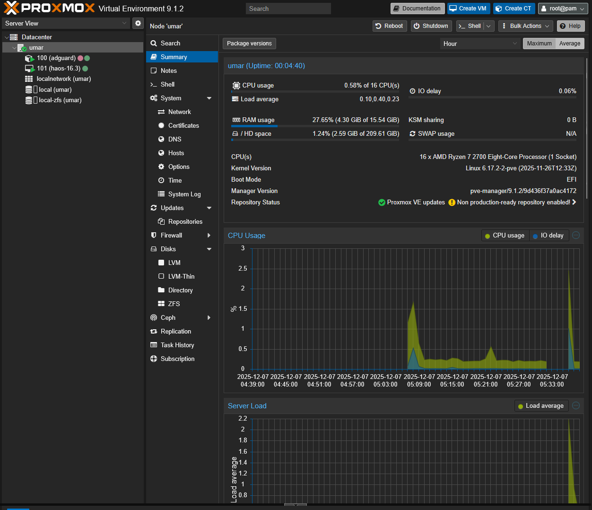
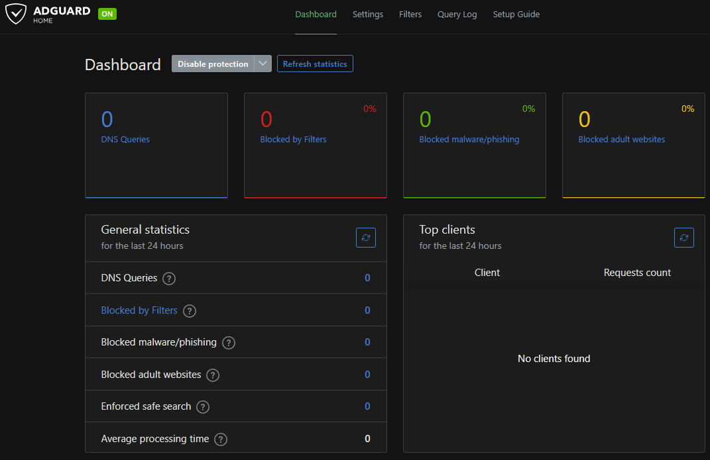

A fun little hobby project that started out of a desire to learn more about hosting servers and services.

After taking a university course on IT Networking, and many YouTube videos showing off clean homelab setups and the many open source services they host for their needs, I decided to gather some old computer parts I had tucked away and built a second computer. I then chose to install Proxmox VE, a hypervisor for managing virtual machines and containers.
The parts specifications are as follows: Asus B450-F motherboard, Ryzen 7 2700, 2x8GB 3000MHz DDR4 RAM, 240GB SSD, and an NVIDIA GTX 1650 4GB. All in a beat up plastic case that is falling apart.
Ideally, having a cluster of nodes and mirroring drives in case of hardware failure would be best, but what I have right now is a good initial step in learning more about virtualization.

The service that gave me the push to start this homelabbing journey was AdGuard, a network-wide blocker that filters out advertisements, trackers, and malicious websites on all connected devices using the local DNS server. My family are not really digitally literate, so having a safeguard in case they make a mistake is very helpful.
I also host a virtual machine with Home Assistant OS. Unfortunately, I do not have any smart devices or IoT sensors to connect to it yet, but I plan on purchasing some outdoor cameras to host an NVR and get notifications through Home Assistant.
Although I had some problems initially with IP assignments and remote connecting to my server, being able to host at least one service and have it work has been very fulfilling and I hope to learn more.